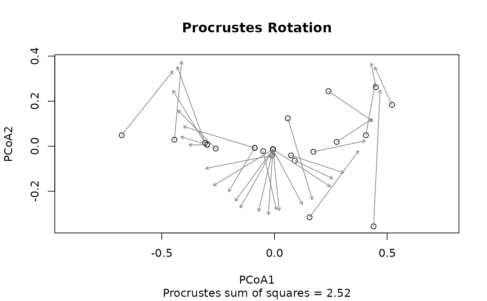

Rotates, reflects, and optionally dilates (uniformly scales) one
ordination, ord, to fit another of the same samples, target, as
closely as possible, and reports how close the fit is: the Procrustes sum
of squares, \(m^2\). Use it to ask how similar two pictures of the same
samples are: the same samples under two beta diversity metrics, say, or
from 16S and from shotgun metagenomics. Gives the same results as
vegan::procrustes(). procrustes_test() tests whether the fit is better
than chance (PROTEST).
Usage
procrustes(
ord,
target,
axes = NULL,
symmetric = FALSE,
dilate = TRUE,
n_axes = 3L,
cpus = n_cpus()
)Arguments
- ord
The ordination to rotate onto
target: a numeric matrix (or data frame) with one row per sample and one column per axis, such as frompcoa(),nmds(),pca(), orumap(); or adistobject, such as frombeta_div(), which is first ordinated withpcoa().- target
The ordination that
ordis fitted to, in any of the formsordtakes. When bothordandtargethave sample (row) names,target's rows are matched toord's by name; otherwise they must be in the same order.- axes
Which axes (columns) of
ordandtargetto use: whole numbers, as inenvfit(). When one of the two has fewer columns than asked for, it is padded with columns of zeros, as invegan::procrustes(). Default:NULL, the firstmin(ncol(ord), ncol(target))axes.- symmetric
Use the symmetric Procrustes statistic: scale both
ordandtargetto unit sum of squares first, so that \(m^2\) is between 0 and 1 and is the same whichever of the two is rotated. Asvegan::procrustes()'ssymmetric. Default:FALSE.- dilate
Allow a uniform dilation (scaling) of
ord, as well as the rotation and reflection.vegan::procrustes()'sscale, renamed becausescalemeans "standardise each feature" elsewhere in ecodive. Default:TRUE.- n_axes
When
ordortargetis adistobject, the number of PCoA axes to compute from it, as inpcoa(). Ignored otherwise. Default:3.- cpus
How many parallel processing threads should be used. The default,
n_cpus(), will use all logical CPU cores.
Value
The rotated ord: a numeric matrix of class ecodive_ord, with
one row per sample and one column per axis (named for target's axes),
as vegan::procrustes()'s Yrot. It is centred, and in target's
frame: target's centred coordinates (scaled to unit sum of squares, if
symmetric) are attribute target. Its attributes:
method:'procrustes'.eig,prop:NAfor each axis, as Procrustes rotation has no eigenvalues.ss: The Procrustes sum of squares, \(m^2\): the sum of squared distances betweentargetand the rotatedord. vegan'sss.rotation: The \(k \times k\) orthogonal matrix that rotates (and possibly reflects) the centredordontotarget. vegan'srotation.translation: The shift that takes the centroid of the rotated and dilatedordto that oftarget, one value per axis, so thatdilation * ord %*% rotation + translation(addingtranslationto each row of the uncentredord) gives the fitted coordinates. Zero whensymmetric, as both are centred first. vegan'stranslation.dilation: The dilation factor applied toord: 1 whendilate = FALSE. vegan'sscale.residuals: Each sample's distance betweentargetand the rotatedord, asresiduals()of avegan::procrustes()result.symmetric: Whether the symmetric statistic was used.target:target's coordinates as fitted: centred, scaled to unit sum of squares ifsymmetric, and padded with zeros to the same axes. vegan'sX.
Details
Method
Procrustes analysis (Gower 1975; Gower & Dijksterhuis 2004) centres ord
(\(Y\)) and target (\(X\)), both \(n \times k\), and finds the
orthogonal matrix \(A\) (a rotation, possibly with a reflection) and
the dilation \(c\) that minimise
$$m^2 = \| X - c Y A \|^2$$
(the sum of squared differences). With \(X^\top Y = U \Sigma V^\top\)
(singular value decomposition), \(A = V U^\top\), as in SciPy's
orthogonal_procrustes(), and
\(c = \mathrm{tr}(\Sigma) / \mathrm{tr}(Y^\top Y)\), or 1 when
dilate = FALSE.
The ordinary (non-symmetric) \(m^2\) depends on the scales of ord
and target, and on which one is rotated. With symmetric = TRUE, both
are first scaled to unit sum of squares, so that
\(m^2 = 1 - \mathrm{tr}(\Sigma)^2\) lies between 0 and 1 and is the
same either way round: SciPy's scipy.spatial.procrustes() "disparity".
procrustes_test() reports \(r = \sqrt{1 - m^2}\), this symmetric
Procrustes correlation.
Rotation can't make up for a different number of axes: compare the same
number from each ordination, as the default axes does.
Differences from vegan::procrustes()
The argument order:
procrustes(ord, target)rotatesordontotarget, asvegan::procrustes(target, ord)(vegan'sprocrustes(X, Y)rotatesYontoX).dilateis vegan'sscale.By default, the axes both have in common are used; vegan pads the one with fewer axes with zeros. Give
axesto do the same.ordandtargetmay bedistobjects, and their samples are matched by name.The result is the rotated ordination itself, with the rest as attributes.
plot()draws it with an arrow from each sample to its place intarget(seeplot.ecodive_ord()); there is nofitted()method.
Same names in other packages
vegan::procrustes() takes its arguments the other way round (see
above). When both packages are attached, the one attached last masks the
other: call ecodive::procrustes() to be sure.
References
Gower, J. C. (1975). Generalized Procrustes analysis. Psychometrika, 40(1), 33-51. doi:10.1007/BF02291478
Gower, J. C., & Dijksterhuis, G. B. (2004). Procrustes Problems. Oxford University Press.
Peres-Neto, P. R., & Jackson, D. A. (2001). How well do multivariate data sets match? The advantages of a Procrustean superimposition approach over the Mantel test. Oecologia, 129(2), 169-178. doi:10.1007/s004420100720
Examples
# The same samples under two beta diversity metrics: 30 samples along a gradient that favours some genera at one end
# and others at the other.
set.seed(1)
grad <- seq(-2, 2, length.out = 30)
counts <- sapply(1:20, function (j) rpois(30, 5 * exp(grad * (j - 10.5) / 5)))
rownames(counts) <- paste0('S', 1:30)
bc <- pcoa(bray(counts), n_axes = 2)
jc <- pcoa(jaccard(counts), n_axes = 2)
fit <- procrustes(jc, bc)
attr(fit, 'ss')
#> [1] 2.520756
attr(fit, 'residuals')
#> S1 S2 S3 S4 S5 S6 S7
#> 0.34932591 0.36099692 0.36411311 0.27373695 0.23874099 0.33038984 0.12135288
#> S8 S9 S10 S11 S12 S13 S14
#> 0.08004099 0.30050059 0.30933607 0.22656374 0.28374082 0.29777517 0.28249482
#> S15 S16 S17 S18 S19 S20 S21
#> 0.29095713 0.26651277 0.27342894 0.27743497 0.37654038 0.30411042 0.18633496
#> S22 S23 S24 S25 S26 S27 S28
#> 0.24588617 0.36725760 0.23591621 0.18771922 0.23811780 0.60565469 0.23559225
#> S29 S30
#> 0.18422628 0.10820729
# Each sample's arrow points to where it lies in the target.
plot(fit)

# Symmetric: m^2 between 0 and 1.
attr(procrustes(jc, bc, symmetric = TRUE), 'ss')
#> [1] 0.49545
# Distances are ordinated with pcoa() first.
attr(procrustes(jaccard(counts), bray(counts), n_axes = 2), 'ss')
#> [1] 2.520756